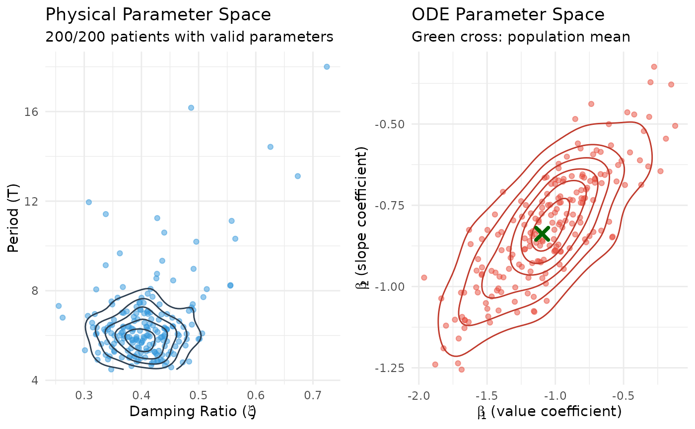
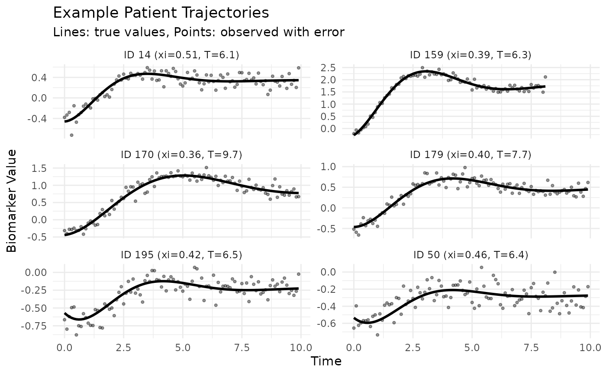

A simulated dataset generated using the Joint ODE Model framework, demonstrating patient heterogeneity through continuous distributions of dynamics parameters, with longitudinal biomarker measurements and survival outcomes.
Format
A list with two components:
- data
A list containing the simulated data:
- longitudinal_data
Data frame with longitudinal measurements:
id: Patient identifier (1-200)
time: Measurement time
observed: Observed biomarker (with measurement error)
biomarker: True biomarker value
velocity: First derivative
acceleration: Second derivative
x1, x2: Longitudinal covariates
- survival_data
Data frame with survival outcomes (200 patients):
id: Patient identifier
time: Event or censoring time
status: Event indicator (1=event, 0=censored)
w1, w2: Survival covariates
- state
Data frame with initial states (200 patients):
biomarker: Initial biomarker value
velocity: Initial velocity (with individual variation)
- init
A list containing initial parameter values:
- coefficients
True parameter values used in simulation:
baseline: B-spline coefficients for log baseline hazard
acceleration: ODE dynamics parameters (population mean)
hazard: Association and covariate coefficients
measurement_error_sd: Measurement error SD (0.12)
random_effect_sigma: Covariance matrix for dynamics
- random_effects
Data frame of patient-specific deviations from population mean dynamics
- configurations
Model configuration:
baseline: B-spline configuration for baseline hazard
gamma: Power parameter for velocity effect (1)
Details
The dataset contains 200 patients with heterogeneous dynamics sampled from continuous normal distributions. Patient-specific dynamics parameters (damping ratio \(\xi_i\) and period \(T_i\)) are drawn from:
\(\xi_i \sim N(0.4, 0.05^2)\) - damping ratio distribution
\(T_i \sim N(6, 1.0^2)\) - period distribution
The dataset is designed to achieve approximately 60\ meaningful biomarker trajectory differences between event and censored groups.
These are transformed to ODE parameters using the Delta method to preserve correct covariance structure. The "true" parameters in init$coefficients represent population-level means suitable for model initialization.
Examples
# Load the data
data(sim)
# Examine structure
str(sim, max.level = 2)
#> List of 2
#> $ data:List of 4
#> ..$ longitudinal_data:'data.frame': 17254 obs. of 8 variables:
#> ..$ survival_data :'data.frame': 200 obs. of 5 variables:
#> ..$ state :'data.frame': 200 obs. of 2 variables:
#> ..$ random_effects : num [1:200, 1:5] -0.2997 -0.5693 -0.2973 0.0664 -0.4436 ...
#> .. ..- attr(*, "dimnames")=List of 2
#> .. ..- attr(*, "mu")= Named num [1:5] -1.097 -0.838 0 0.548 -0.493
#> .. .. ..- attr(*, "names")= chr [1:5] "dyn_value" "dyn_slope" "dyn_const" "dyn_x1" ...
#> .. ..- attr(*, "sigma")= num [1:5, 1:5] 0.1336 0.051 0 -0.0668 0.0601 ...
#> $ init:List of 2
#> ..$ coefficients :List of 5
#> ..$ configurations:List of 2
# Access longitudinal data
head(sim$data$longitudinal_data)
#> id time biomarker velocity acceleration observed x1 x2
#> 1 1 0.0 -0.6767667 -0.6798810 0.02650752 -0.8878248 -0.5604756 2.19881
#> 2 1 0.1 -0.7444732 -0.6727819 0.11382479 -0.7283845 -0.5604756 2.19881
#> 3 1 0.2 -0.8110503 -0.6574473 0.19118854 -1.0016027 -0.5604756 2.19881
#> 4 1 0.3 -0.8757235 -0.6348777 0.25853494 -0.8985243 -0.5604756 2.19881
#> 5 1 0.4 -0.9378185 -0.6060716 0.31593830 -0.8649257 -0.5604756 2.19881
#> 6 1 0.5 -0.9967620 -0.5720145 0.36360030 -0.9563762 -0.5604756 2.19881
# Summary of survival outcomes
summary(sim$data$survival_data$time)
#> Min. 1st Qu. Median Mean 3rd Qu. Max.
#> 0.5265 8.4279 10.0000 8.6109 10.0000 10.0000
table(sim$data$survival_data$status)
#>
#> 0 1
#> 134 66
# Visualize patient heterogeneity
library(ggplot2)
library(dplyr)
#>
#> Attaching package: ‘dplyr’
#> The following objects are masked from ‘package:stats’:
#>
#> filter, lag
#> The following objects are masked from ‘package:base’:
#>
#> intersect, setdiff, setequal, union
# Examine population-level parameters
cat("Population mean dynamics:\n")
#> Population mean dynamics:
print(sim$init$coefficients$acceleration)
#> dyn_value dyn_slope dyn_const dyn_x1 dyn_x2
#> -1.0966227 -0.8377580 0.0000000 0.5483114 -0.4934802
cat("\nCovariance matrix:\n")
#>
#> Covariance matrix:
print(sim$init$coefficients$random_effect_sigma)
#> [,1] [,2] [,3] [,4] [,5]
#> [1,] 0.13362015 0.05103914 0.00 -0.06681008 0.06012907
#> [2,] 0.05103914 0.03046174 0.00 -0.02551957 0.02296761
#> [3,] 0.00000000 0.00000000 0.01 0.00000000 0.00000000
#> [4,] -0.06681008 -0.02551957 0.00 0.04340504 -0.03006453
#> [5,] 0.06012907 0.02296761 0.00 -0.03006453 0.03705808
# Compute patient-specific xi and period from random effects
# Note: A small number of patients may have invalid dynamics due to
# the tail behavior of the normal approximation
compute_patient_dynamics <- function(dyn_value, dyn_slope) {
omega <- sqrt(-dyn_value)
period <- 2 * pi / omega
xi <- -dyn_slope / (2 * omega)
data.frame(xi = xi, period = period)
}
# Get patient-specific dynamics from random effects
patient_beta <- sweep(
as.matrix(sim$data$random_effects),
2,
sim$init$coefficients$acceleration,
"+"
)
patient_params <- compute_patient_dynamics(
patient_beta[, 1],
patient_beta[, 2]
)
patient_params$id <- seq_len(nrow(patient_params))
# Visualize parameter distributions in both spaces side by side
library(gridExtra)
#>
#> Attaching package: ‘gridExtra’
#> The following object is masked from ‘package:dplyr’:
#>
#> combine
# Remove patients with invalid dynamics (NaN/Inf from constraint violations)
patient_params_valid <- patient_params[
is.finite(patient_params$xi) & is.finite(patient_params$period),
]
# Left: Physical parameter space (xi vs period)
p_physical <- ggplot(patient_params_valid, aes(x = xi, y = period)) +
geom_point(alpha = 0.5, color = "#3498DB") +
geom_density_2d(color = "#2C3E50") +
labs(
title = "Physical Parameter Space",
subtitle = sprintf(
"%d/%d patients with valid parameters",
nrow(patient_params_valid),
nrow(patient_params)
),
x = expression("Damping Ratio ("*xi*")"),
y = "Period (T)"
) +
theme_minimal()
# Right: ODE parameter space (beta1 vs beta2)
beta_df <- data.frame(
beta1 = patient_beta[, 1],
beta2 = patient_beta[, 2]
)
p_ode <- ggplot(beta_df, aes(x = beta1, y = beta2)) +
geom_point(alpha = 0.5, color = "#E74C3C") +
geom_density_2d(color = "#C0392B") +
annotate("point",
x = sim$init$coefficients$acceleration[1],
y = sim$init$coefficients$acceleration[2],
color = "darkgreen", size = 3, shape = 4, stroke = 2
) +
labs(
title = "ODE Parameter Space",
subtitle = "Green cross: population mean",
x = expression(beta[1]~"(value coefficient)"),
y = expression(beta[2]~"(slope coefficient)")
) +
theme_minimal()
# Display side by side
grid.arrange(p_physical, p_ode, ncol = 2)

# Select example patients across the distribution (only valid ones)
set.seed(123)
example_ids <- sample(patient_params_valid$id,
min(6, nrow(patient_params_valid)))
plot_data <- sim$data$longitudinal_data %>%
filter(id %in% example_ids) %>%
left_join(patient_params_valid, by = "id") %>%
mutate(label = sprintf("ID %d (xi=%.2f, T=%.1f)", id, xi, period))
# Plot example trajectories
p2 <- ggplot(plot_data, aes(x = time, y = biomarker)) +
geom_line(linewidth = 1) +
geom_point(aes(y = observed), alpha = 0.4, size = 0.8) +
facet_wrap(~ label, scales = "free_y", ncol = 2) +
labs(
title = "Example Patient Trajectories",
subtitle = "Lines: true values, Points: observed with error",
x = "Time",
y = "Biomarker Value"
) +
theme_minimal()
print(p2)

if (FALSE) { # \dontrun{
# Fit a Joint ODE model using this data
fit <- JointODE(
longitudinal_formula = observed ~ x1 + x2,
survival_formula = Surv(time, status) ~ w1 + w2,
longitudinal_data = sim$data$longitudinal_data,
survival_data = sim$data$survival_data,
state = as.matrix(sim$data$state)
)
summary(fit)
} # }